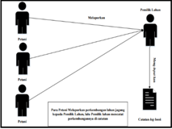
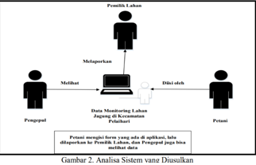
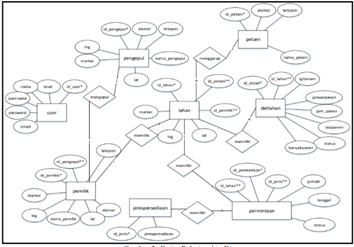
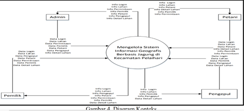
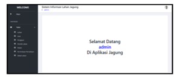
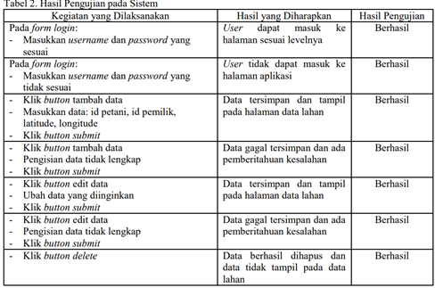

LAHAN KERING.
Sistem Informasi Pertanian Jagung Manis.
KELOMPOK 1
NAMA-NAMA KELOMPOK

1. PENDAHULUAN
Kabupaten Tanah Laut adalah salah satu Kabupaten di Provinsi Kalimantan Selatan yang ditetapkan sebagai lumbung jagung nasional pada tahun 2017 oleh pemerintah pusat.Penghargaan ini diberikan atas keberhasilan Tanah Laut dalam meningkatkan produksi jagung yang mencapai 115 ribu ton pada tahun 2016 (60% dariproduksi jagung Kalimantan Selatan).Agribisnis jagung di Kabupaten ini adalah yang terbaik di Kalimantan karena Tanah Laut memiliki pasar jagung,luas tanam dan produksi,dan pabrik pakan ternak sebanyak dua pabrik.Kecamatan Pelaihari adalah salah satu kecamatan di Kabupaten Tanah Laut dengan komonitas unggulan palawija adalah tanaman jagung.Total produksi dari tanaman ini pada tahun 2017 adalah sebanyak 32.727 ton dengan luas tanam mencapai 4.270 Ha.
2. PENELITIAN TERDAHULU
Penelitian-penelitian terdahulu yang berkaitan dengan penelitian disajikan pada Tabel 1.
tabel.1
3. METODE PENELITIAN
Tahapan-tahapan penelitian diuraikan sebagai berikut.
- a. Identifikasi masalah Pada tahap ini dilakukan identifikasi masalah mengenai pertanian jagung
manis di
Kecamatan Pelaihari,kemudian kebutuhan dari sistem yang
akan dibangun diana lisa sehingga diperoleh kebutuhan sistem (system requirement).
b. Pengumpulan data Tahap pengumpulan data mengenai alur sistem informasi pertanian jagung manis dilakukan melalui proses wawancara dengan pelaku pertanian jagung,yakni pemilik lahan dan pengepul.
c. Perancangan sistem Sistem informasi pertanian jagung manis dirancang menggunakan Entity Relationship Diagram (ERD) dan Data Flow Diagram (DFD).Pembuatan ERD dan DFD mengacu pada.
d. Pembangunan sistem Sistem dibangun dengan bahasa pemrograman PHP dan database MySQL yang mereferensi.
e. Pengujian system
4. HASIL DAN PEMBAHASAN
4.1 Analisa Sistem yang Berjalan Berdasarkan wawancara dengan pemilik lahan, pemantauan perkembangan lahan pertanian dilakukan secara tatap muka, dimana pemilik lahan mendatangi lahan secara langsung dan mendapatkan laporan dari petani. Sistem yang berjalan ini diilustrasikan pada Gambar 1:
tabel.1
4.2 Analisa Sistem yang Diusulkan Analisa sistem yang diusulkan oleh penulis berupa sebuah sistem yang menggunakan sistem informasi untuk pelaporan monitoring lahan jagung di kecamatan pelaihari.Petani cukup mengisi data perkembangan lahan jagung yang disediakan pada form lahan jagung pada aplikasi.Aplikasi otomatis memproses data dan melaporkan kepada pemilik lahan perkembangan lahan jagungnya tanpa harus turun kelapangan untuk bertatap muka kepada petani. Aplikasi juga mengakomodasi pemilik lahan untuk melakukan komunikasi dengan pengepul.
Sistem yang diusulkan diilustrasikan Gambar 2..
tabel.2
4.3 Perancangan Sistem
a. Entity Relationship Diagram (ERD) Rancangan ERD pada sistem ini memiliki delapan entitas atau delapan tabel yang saling berelasi yaitu tabel User, pemilik, pengepul, petani,lahan,detlahan,jenis persediaan,dan permintaan.
Rancangan ERD dapatdilihat pada Gambar 3:
tabel.3
b. Data Flow Diagram (DFD) Diagram konteks yang merupakan level tertinggi dari DFD untuk menggambarkan keseluruhan Sistem Informasi Pertanian Jagung Manis dapat dilihat pada Gambar 4.
tabel.4
4.4 Implementasi Sistem
1. Implementasi Halaman Beranda Implementasi halaman beranda Sistem Informasi Pertanian Jagung Manis berisikan ucapan selamat datang sesuai pengguna yang login.
Tampilannya dapat dilihat pada Gambar 5.
tabel.5
2. Implementasi Halaman Tampil Lahan Halaman tampil lahan menyediakan tampilan data lahan yang telah ditambahkan,fitur tambah data,fitur cari,serta fitur edit dan delete bagi data lahan yang telah ada. Tambah data lahan berisikan is lahan,id petani,serta koordinat latitude dan longitude yang kemudian akan tampil jika telah disimpan.
3. Implementasi Halaman Tampil User Halaman tampil user menyediakan tampilan data user yang telah ditambahkan,fitur tambah data,fitur cari,serta fitur edit dan delete bagi data user yang telah ada. Tambah data user berisikan ID,username,password,email,level,dan nama yang kemudian akan tampil jika telah disimpan.
4. Implementasi Halaman Tampil Pengepul Halaman tampil pengepul menyediakan tampilan data pengepul yang telah ditambahkan,fitur tambah data,fitur cari,serta fitur edit dan delete bagi data pengepul yang telah ada. Tambah data pengepul berisikan ID pengepul,nama,alamat,telepon,serta latitude dan longitude yang kemudian akan tampil jika telah disimpan.
5. Implementasi Halaman Tampil PemilikLahan Halaman tampil pemilik lahan menyediakan data tampilan pemilik lahan yang telah ditambahkan,fitur tambah data,fitur cari,serta fitur edit dan delete bagi data pemilik lahan yang telah ada. Tambah data pemilik lahan berisikan ID pemilik,nama pemilik,alamat, telepon, nama pengepul,serta latitude dan longitude yang kemudian akan tampil jika telah disimpan.
6. Implementasi Halaman Tampil Petani Halaman tampil petani menyediakan tampilan data petani yang telah ditambahkan,fitur tambah data,fitur cari,serta fitur edit dan delete bagi data petani yang telah ada. Tambah data petani berisikan ID petani,namapetani,alamat,dan telepon yang kemudian akan tampil jika telah disimpan.
4.5 Pembahasan
Sistem informasi pertanian jagung dapat digunakan oleh 4 (empat) pengguna,yakni admin, pemiliklahan,petani,dan pengepul. Setiap pengguna mempunyai hak akses yang berbeda. Hak akses setiap pengguna dijabarkan sebagai berikut..
1. Admin dapat mengelola lahan jagung,mengelola user, mengelola pengepul, mengelola pemilik lahan, mengelola petani, mengelola permintaan persediaan, dan mengelola detail lahan. Pengelolaan meliputi tampil,tambah,dan edit.
3. Pemilik lahan dapat mengelola lahan meliputi tampil, tambah,dan edit; melihat data pengepul; mengelola pemilik lahan meliputi tampil dan edit; mengelola petani meliputi tampil,tambah, dan edit; menampilkan data permintaan persedian; dan menampilkan detail lahan..
4. Petani dapat menampilkan data lahan dan pemiliklahan, mengelola petani meliputi tampil dan edit; mengelola permintaan persediaan meliputi tampil,tambah,dan edit; mengelola2. Pengelola dapat melihat data mengenailahan,pengepul,pemiliklahan,detail lahan.
4.6 Pengujian Sistem
Hasil pengujian sistem informasi pertanian jagung manis menggunakan black box disajikan pada Tabel 2
tabel.6
5. KESIMPULAN
Pembangunan sistem informasi pertanian jagung manis menggunakan bahasa pemrograman PHP dan database MySQL telah berhasil dibangun. Sistem informasi pertanian jagung manis dapat digunakan oleh 4 (empat) pengguna,yakni admin,pemiliklahan,petani, dan pengepul. Sistem informasi ini membantu dalam pengelolaan lahan,user,pengepul,pemilik lahan,petani, permintaan persediaan,dan detail lahan,Setiap pengguna mempunyai hak akses yang berbeda dalam pengelolaan ini. Pengujian menggunakan black box juga telah dilakukan dan menunjukkan hasil bahwa semua fungsi dalam sistem telah berjalan dengan baik.